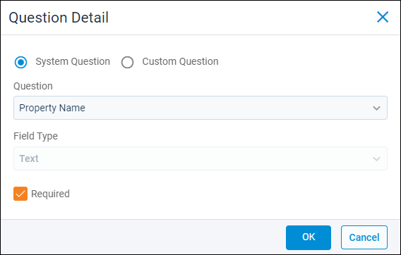
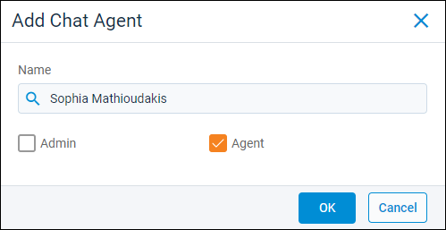
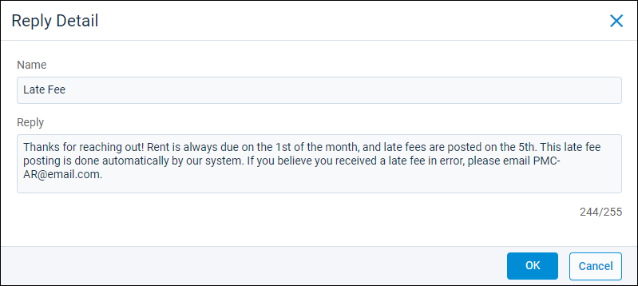

Source: https://rmxhelp.rentmanager.com/Topics/Express/KB/Web-Chat-Add-Queue.htm
Add a Web Chat Queue
Rent Manager's Web Chat feature allows you to place a chat button on your Tenant Web Access (TWA), Owner Web Access (OWA), and Web Template Suite sites, as well as custom websites. When a visitor clicks this button, they are connected with a Rent Manager user to begin a web chat.
More Information
This feature is licensed and must be purchased separately. For more information, contact your sales representative at sales@rentmanager.com.
Web Chat queues allow you to direct incoming chats to the user(s) most appropriate to assist. Queues must be established as part of setting up Web Chat in Rent Manager and multiple queues can be added. For example, you may specify that property managers are the users who answer chats inbound from TWA, while leasing agents should answer prospects who begin a chat on your property website.
Within each queue, you determine the questions a visitor answers when they initiate a chat, the Rent Manager users who may act as communication agents for each queue, how many conversations each user may take, and whether or not visitors can leave offline messages when no agents are available.
If you are setting up Web Chat for the first time, refer to Set Up Web Chat for more information. This topic covers the details of creating a new queue for Web Chat(s).
Step 1: Create a Queue
Related Privileges
| Group | Privilege | Column |
|---|---|---|
| Web Chat | Queues | Add, View |
For more information, refer to Control User Access.
To create a new Web Chat queue, do the following:
-
Go to
 arrow_forward Communication arrow_forward Web Chat arrow_forward Manage Queues.
arrow_forward Communication arrow_forward Web Chat arrow_forward Manage Queues.
The Manage Queues page displays. -
In the Queues section, click
 Add Queue.
Add Queue. -
In the General Information section, enter information into the available fields.
Field Description Queue Name
The unique name that identifies the Web Chat queue for internal reference.
Display Name
The name on the header of the chat pop-up that displays to website visitors (up to 25 characters).
Online Button Text
The text which displays on the website's button that begins a chat when clicked on by a visitor, such as Chat Now!.
Maximum Conversations per Agent
The most conversations a Rent Manager Web Chat agent may actively handle at one time. If an agent reaches this maximum, they need to complete a chat or have a chat ended by the user before they may accept another Web Chat.
To allow all agents to take an unlimited number of conversations, enter 0. If only specific Rent Manager users should be allowed top take unlimited conversations, instead enter a limit for all agents and then grant those users the following privilege:
Related Privileges
Group Privilege Column Web Chat Allow Agent to Exceed Maximum Conversations Enabled For more information, refer to Control User Access.
Allow client to email the chat transcript
If enabled, allows the visitor to request and receive a transcript of the chat via email after the conversation is completed, closed, or times out.
Show button when chat is offline
If enabled, the Web Chat button still displays when no agents are logged in to the queue, but informs the visitors that no agents are online at this time.
Additionally, the following options become available:
Allow questions when no agents are logged in
Allows visitors to submit a question via Web Chat even if no agents are online.
If enabled, a Leave a Message button displays in the Web Chat pop-up and allows the visitor to submit a message that is sent to the Offline Conversations page where it can be followed up on later.
Offline Button Text
The text to display on the Web Chat button when no agents for the website's designated queue are online. This text displays in place of the Online Button Text.
Offline Message
When visitors click the website's Web Chat button and there are no agents logged into the designated queue, this text displays in the Web Chat window instead of being answered by an agent.
Step 2: Add Questions
When a visitor initiates a Web Chat from your website or portal, they are prompted to enter information to identify themselves. You can customize the information that is required for them to submit and any additional information they can opt to include when they start a chat. This information is passed to the Rent Manager user that accepts the chat.
To add a question for the queue, do the following:
-
In the Questions section, click
Add Question.
-
Select whether you wish to use a default System Question provided by Rent Manager or create your own Custom Question.
-
In the Question field, enter or select a question to ask the visitor.
Option Description Custom Question
Type a brief message that requests specific information from the visitor, such as Preferred Contact Method or Company.
System Question
Select a preset option that requests the visitor provide one of the following: Name, Email Address, Phone Number, Property, or Unit.
More Information
The system questions Name and Email Address are added by default when you create a queue. To remove a question from on the Questions section , click
 arrow_forward Delete for the associated question.
arrow_forward Delete for the associated question. -
If you selected Custom Question, select how information can be entered for the question. The available options are described below.
Option Description Text
The visitor can enter alphanumeric text, such as John Doe or J.Doe123@email.com.
All System Question options use this field type.
Dropdown
The visitor chooses from a preset list of options you define. If selected, the Dropdown Choices section displays. Click
Add Item to add all options the visitor may select from.Yes/No
The visitor chooses either Yes or No for the question.
Date
The visitor can enter only a date for the question in MM/DD/YYYY format.
Numeric
The visitor can enter only numeric characters for the question, such as 12345.
-
If the visitor must enter a value for the question before they can initiate a Web Chat, check Required. If unchecked, the visitor may start a Web Chat whether they enter a value for the question or not.
-
Click OK.
The question is added to the Questions section. -
Repeat these steps until all needed questions are added.
Step 3: Add Chat Agents
Chat agents are Rent Manager users who accept Web Chats and hold a conversation with the website visitor. Agents can also be set as administrators to manage incoming Web Chats and other agents. At least one agent must be added to the queue.
To add a Web Chat agent for the queue, do the following:
-
In the Chat Agents section, click
Add Agent.
-
In the Name field, select a Rent Manager user account.
-
Check one of the following options:
Field Description Admin
Grants the user the following administrative abilities for managing Web Chats from the My Conversations page:
-
Reorder conversations in queues.
-
Assign conversations to other users.
-
View all pending conversations in the queue.
-
Start conversations in any order.
If checked, the Agent field is also checked automatically. For more information, refer to My Conversations (Web Chat) (Page).
Agent
The user can view and accept only the next conversation waiting in the queue.
-
-
Click OK.
The user is added to the Chat Agents section. -
Repeat these steps until all needed agents are added.
Step 4: Create Saved Replies
Saved replies are standardized, preset replies that agents can quickly access and send in Web Chat. This allows agents to quickly provide answers for common questions without having to manually type the information every time. This also makes it easier for all agents to be consistent and up to date when replying to common inquiries.
To create a saved reply for the queue, do the following:
-
In the Saved Replies section, click
Add Saved Reply.
-
In the available fields, enter the following information:
Field Description Name
The name of the saved reply as it displays when an agent accesses the list of saved replies.
It is recommended that each name be clear and unique, such as Service Request Submitted or Late Rent Policy. This allows the agents to quickly identify each option and select the appropriate one for their situation.
Reply
The text that populates in the Web Chat reply field when the agent selects the saved reply. This text is not sent to the visitor until the agent clicks
 to send the message. This allows the agent to verify they have selected the correct reply or make any minor edits before sending the message to the visitor.
to send the message. This allows the agent to verify they have selected the correct reply or make any minor edits before sending the message to the visitor. -
Click OK.
The reply is added to the Saved Replies section. -
Repeat these steps until all your commonly used responses are added.
Step 5: Set Available Actions
Actions allow your chat agents to quickly perform tasks related to the conversation without leaving the chat page. For example, if a tenant chats in from Tenant Web Access reporting a leaky faucet, the agent can select the action Add Issue to create a service issue for that tenant's maintenance request.
To make an action available for chat agents in the queue, check the associated box in the Enabled column. To remove the action from the agents' options, uncheck the box. The following actions are available:
| Action |
Description |
|---|---|
|
Add Appointment |
Agents can create an appointment from the chat window that is then added to the calendar in Rent Manager. For more information, refer to Add an Appointment. |
|
Add Issue |
Agents can create a new service issue from the chat window. For more information, refer to Add an Issue. |
|
Add Owner Prospect |
Agents can add the chat recipient as an owner prospect with their name and email address pre-populated. For more information, refer to Add a Prospect. The name and email populate only if, on the Questions tile, the System Questions for Name and Email Address are listed and the recipient enters the information. |
|
Add Prospect |
Agents can add the chat recipient as a prospect with their name pre-populated. For more information, refer to Add a Prospect. The name populates only if, on the Questions tile, the System Question for Name is listed and the recipient enters a name. |
|
Add Task |
Agents can create a new task from the chat window that can be quickly referenced on your dashboard for users with the Task tile. For more information, refer to Add a Task or Memorized Task. |
|
Add Vendor |
Agents can add the chat recipient as a vendor with their name and email address pre-populated. For more information, refer to Add a Vendor. The name and email populate only if, on the Questions tile, the System Questions for Name and Email Address are listed and the recipient enters the information. |
Once all queue information is entered, click Save to finish creating the Web Chat queue. The queue is added to the Queues section on the left.